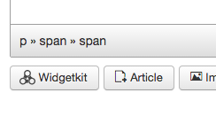
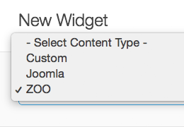
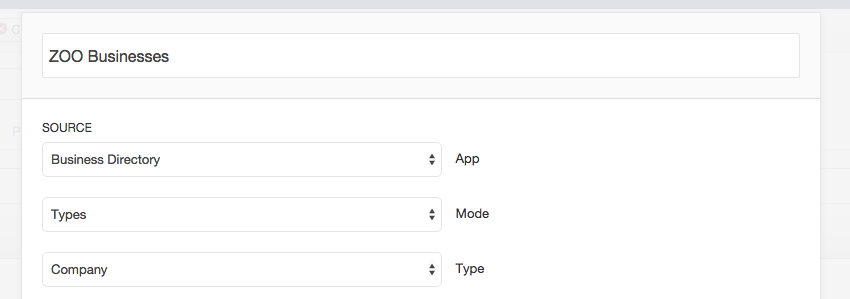
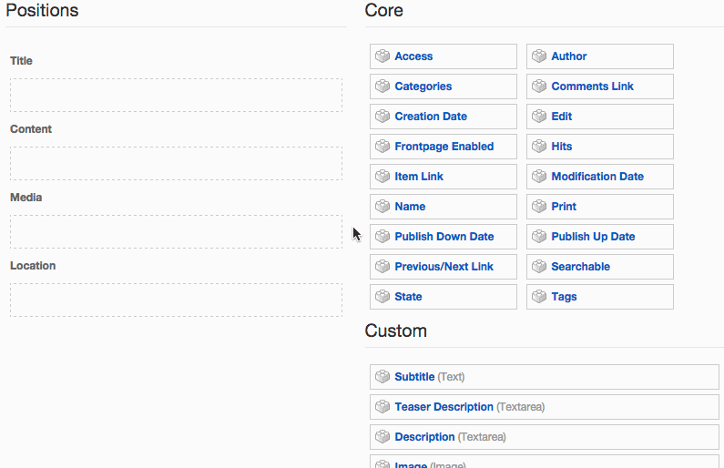
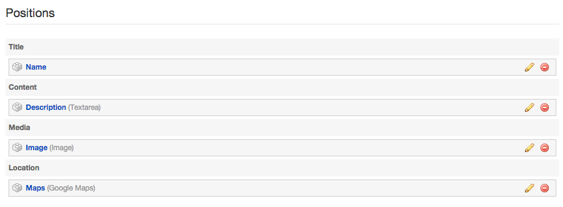

Widgetkit allows you to use content types right from ZOO. In order for Widgetkit to know which elements of your ZOO types should be used, you have to set up a custom mapping. This gives you full control of how your content is presented.
Like with any other widget content, we first navigate to an article or module in Joomla and click on the Widgetkit button in the editor. Select any Widget type you like. Once you are presented with the selection of content, you can create a new content item with content coming from ZOO.
Select ZOO when clicking the New button.
Select your desired App and the type of content you want to display. In our example we are choosing the Business directory App from the demo content and the Company type.
Select all options as you desire and confirm with a click on the Save button. Close the content editor to go back to the Widget configuration. Hit Save and close the Widgetkit interface.
Save your article or module and navigate to the frontend to view your widget. Right now, you will not be seeing any output or just a broken view. To change this we have to map ZOO elemets to the content fields that Widgetkit understands.
Any type in ZOO can have arbitrary elements with basically unlimited combinations. Widgetkit on the other hand uses content providers with a limited set of fields that are used for rendering. That is why we have to assign a mapping from ZOO elements to the content fields Widgetkit knows about.
Navigate to the ZOO App manager and click on the Configuration icon (a cog button at the very right of your available Apps).
We select the App from our earlier example (Business directory). You will see the available types of that app. On the right you see a column for Extension Layouts. Click on the Widgetkit 2 mapping for the type you want to configure (Company in our example).
The presented interface shows two columns. On the left you see the available positions in Widgetkit's content. Those represent the content fields and will be empty by default. On the right you see all available ZOO elements. You can now simply drag-and-drop any elements you want to assign from the right to the left.
Basically you can chose any mapping you like. A possible selection can be seen in the following screenshot.
NOTE Elements in the fields Title and Content will be used for immediate rendering. Elements in the other fields are used to hold certain data but will not affect the rendering immediately. The media field for example will hold an image. However, any options you assign here (like width etc.) will not affect the rendering. All rendering options need to be configured in the Widgetkit interface.